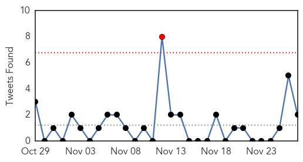
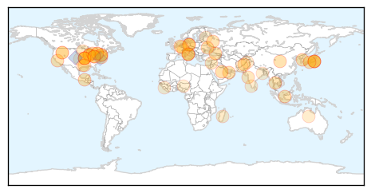
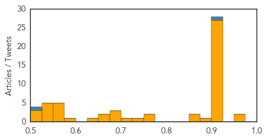
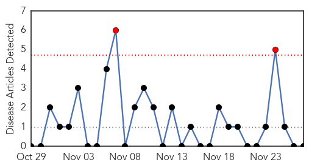

Unknown
30-Day Web Trend
1 alerts, 0 warnings

30-Day Twitter Trend
1 alerts, 0 warnings

Article Locations
Article Confidences
Top Articles:
- 0.971
- Gulf Daily News World News Saudi Mers toll 348
- 0.964
- Bird flu outbreak in India caused by strain humans can contract - OIE
- 0.919
- Ticks carrying Lyme disease bacteria found in Rouge Valley
- 0.917
- Chicago Tribune
- 0.917
- Chicago Tribune
- 0.917
- Chicago Tribune
- 0.917
- Chicago Tribune
- 0.917
- Chicago Tribune
- 0.917
- Chicago Tribune
- 0.917
- Chicago Tribune
- 0.917
- Chicago Tribune
- 0.917
- Chicago Tribune
- 0.917
- Chicago Tribune
- 0.917
- Chicago Tribune
- 0.917
- Chicago Tribune
- 0.917
- Chicago Tribune
- 0.917
- Chicago Tribune
- 0.917
- Chicago Tribune
- 0.917
- Chicago Tribune
- 0.917
- Chicago Tribune
- 0.917
- Chicago Tribune
- 0.917
- Chicago Tribune
- 0.917
- Chicago Tribune
- 0.917
- Chicago Tribune
- 0.917
- Chicago Tribune
- 0.917
- Chicago Tribune
- 0.917
- Chicago Tribune
- 0.910
- The world windows to Thailand
- 0.909
- Khader reviews preparedness for Avian flu
- 0.890
- Health Talk: Respiratory viruses -What every parent needs to know
- 0.866
- Ukraine's Poroshenko says country opposes federalisation
- 0.866
- Putin, Poroshenko speak on phone about southeast Ukraine
- 0.773
- Italy bans Novartis flu vaccine after suspicious deaths
- 0.761
- Vedanthangal Not at Virus Risk, says Vet
- 0.734
- Baton Rouge Water Co. tests clean for deadly amoeba
- 0.717
- Damascus Hit by Tropical Fly-Borne Illness
- 0.699
- What's Going Around: viral diarrhea and respiratory tract infect
- 0.698
- Italy bans Novartis flu vaccine after suspicious deaths
- 0.680
- Novartis flu vax banned after deaths • Health Times
- 0.672
- Health professionals recommit on World AIDS Day
- 0.657
- Thar crisis: Sindh govt blamed for poor healthcare
- 0.649
- Global polio cases top 300 as Pakistan reports 14 additional WPV-1
- 0.584
- CSIRO: Australia's under-resourced biosecurity puts country at risk
- 0.575
- Uncontrolled Influx of Poultry from Other States Raises Concern
- 0.569
- WHO warns on HIV spread in Europe and Central Asia
- 0.569
- HIV/AIDS epidemic in Russia takes irreversible character
- 0.568
- Ontario's Dentists: Community Water Fluoridation is Safe and effective in the fight against tooth decay -- TORONTO, Nov. 27, 2014
- 0.553
- Adverse IMR, MMR in WG leave Collector perplexed
- 0.549
- No doctor for 70pc BHUs in three KP districts
- 0.547
- Nigeria's Fake Doctors
Showing top 50 articles...
Top Tweets:
- 0.906
- RT: The MERS outbreak in Alkharj, KSA continues. Latest case, reported today, likely contracted virus in hospital. http:/…
- 0.770
- Pass the potatoes, not flu germs! Share a delicious meal this Thanksgiving, not the flu. Easy ways to stay flu-free http://t.co/c4fAR1wDrs
- 0.721
- RT: Luego de una tarde en Playa Sucia: un poco de "housekeeping". Recogimos docenas de tapitas y sorbetos. déjalomejor http:/…
- 0.719
- Sierra Leone's Ministry of Health reported 71 new cases yesterday http://t.co/mPT4ZgynRN
- 0.547
- Paraguay se ubica por encima de Brasil y Argentina en índice de hacer negocios: Al final de cada año, el Ban... http://t.co/TIuz674sJf
Swine Flu
30-Day Web Trend
2 alerts, 0 warnings

30-Day Twitter Trend
0 alerts, 0 warnings
Article Locations

Article Confidences

Top Articles:
-
No articles found for Nov 27, 2014
Top Tweets:
-
No tweets found for Nov 27, 2014